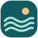

우리 마을
기후 탐구실
4학년 과학 · 기후 변화와 우리 생활
?
수업 도구
내 탐구 기록지
0
움직이는 장면은 학습용 모형이에요. 실제 관측 수치는 ‘자료’에서 확인해요.

04 교과서 98~99쪽
해수면 상승 실험실
실험 원리
탐구 노트
해수면 시뮬레이션
해안 마을 수조
건물 이름
손가락으로 밀어 마을을 돌려 보세요.
관찰 현황
물 높이
0
단계
잠긴 건물
0
개
전체 건물
7
개